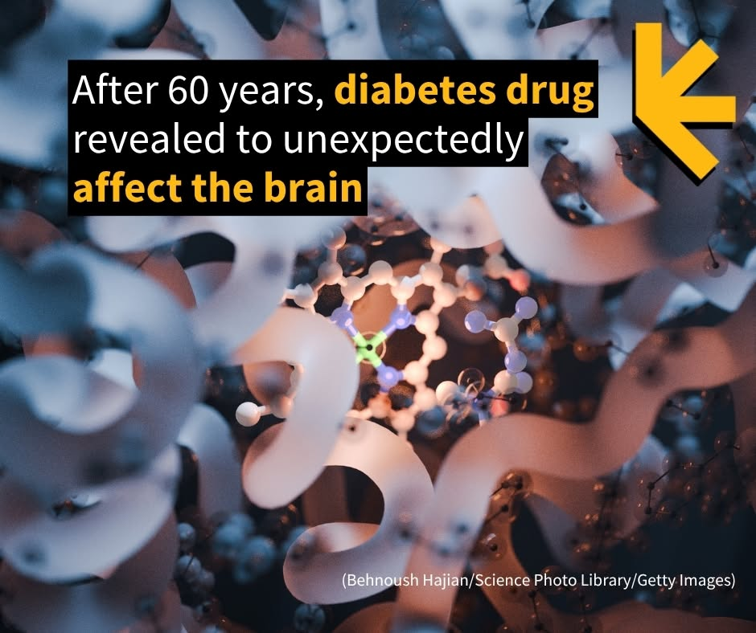

Metformin may slow brain aging.
A small randomized trial in monkeys seems to confirm this. See this old post: ↪ Metformin slowed brain aging in monkeys, with neurons resembling those 6 years younger.
Louis notes that metformin may slow brain aging, citing a small randomized monkey trial from an earlier post and a ScienceAlert article on other studies linking the drug to slower brain aging and longer lifespan.
Metformin may slow brain aging.
A small randomized trial in monkeys seems to confirm this. See this old post: ↪ Metformin slowed brain aging in monkeys, with neurons resembling those 6 years younger.
This also ties into other interesting studies that have found the same drug can slow brain aging and improve lifespan.
ScienceAlertAfter 60 Years, Diabetes Drug Revealed to Unexpectedly Affect The BrainMetformin has been prescribed to people with type 2 diabetes to manage blood sugar for more than 60 years, but scientists haven't been exactly sure how it works - until now.sciencealert.com

Louis shares a New Scientist report on observational analysis of the Diabetes Prevention Program randomized trial and its follow-up, suggesting metformin may cut dementia risk by more than half. It aligns with monkey data on slower brain aging. The finding is not conclusive and the mechanism is unclear.

Shared summary of research on metformin and the aging primate brain, describing preservation of myelin 'wiring'. Louis links four prior posts on the study.
Louis flags a Cell study, covered by Nature, in which male monkeys on daily metformin for over three years showed slower age-related brain decline, enhanced cognition and preserved liver function. Their neuronal activity resembled monkeys about six years younger (around 18 human years). The study was small, and human benefit is unproven.

Louis shares a review reporting that metformin significantly improved health parameters in aged male cynomolgus monkeys, possibly by slowing aging, as a step toward understanding drug-based healthspan extension.

Louis calculates that the cynomolgus monkey aging study used 20 mg/kg metformin daily for 40 months. Using the FDA allometric scaling factor of 3.1, this is about 6.45 mg/kg, or roughly 450 mg for a 70 kg person, about a quarter of the 2 g typical diabetic dose.

Louis reposts the Cell paper abstract on a 40-month trial of metformin in adult male cynomolgus monkeys. Metformin slowed pan-tissue aging clocks, notably about a 6-year regression in brain aging, preserved brain structure and improved cognition, partly through Nrf2 activation in neurons. Only males were studied.